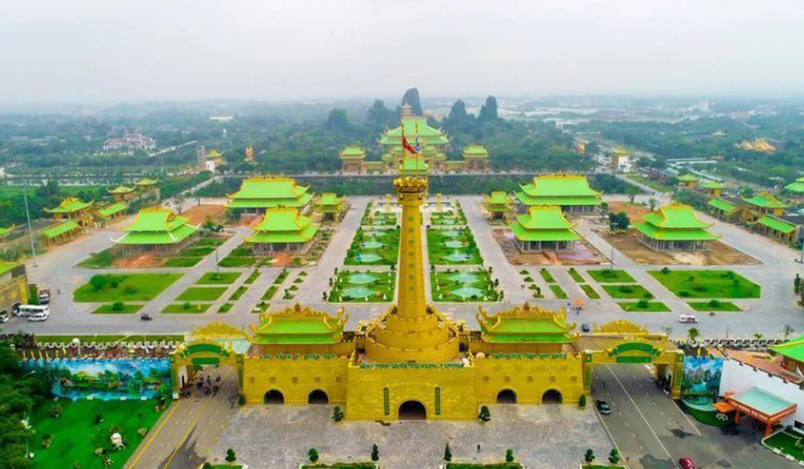
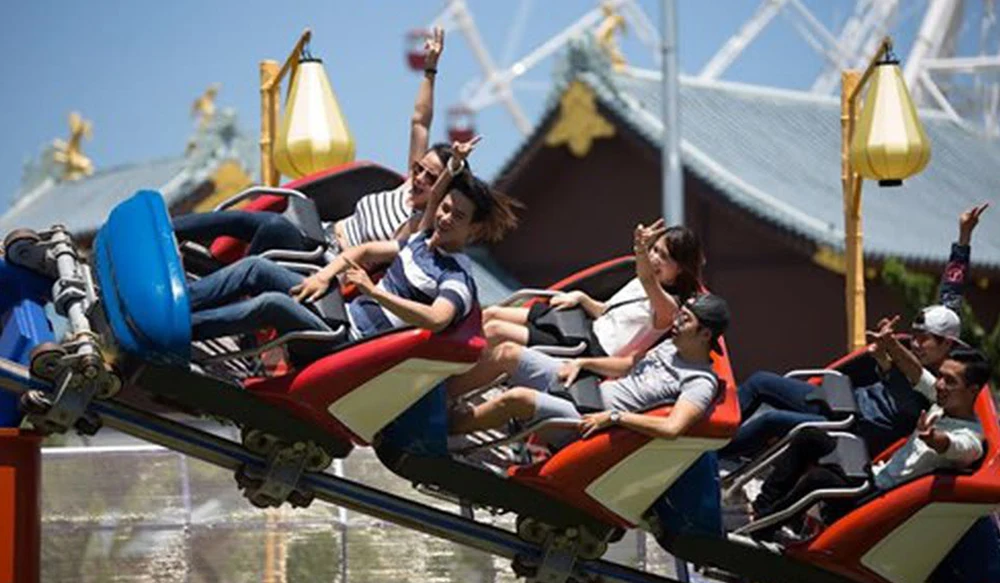
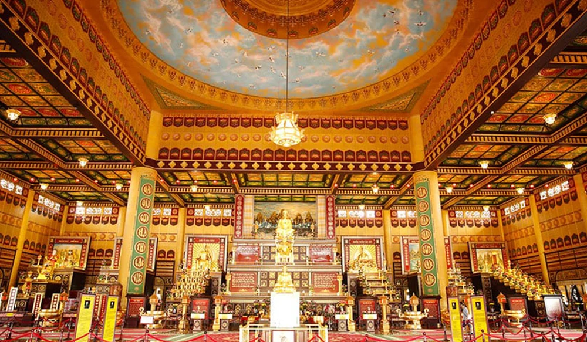
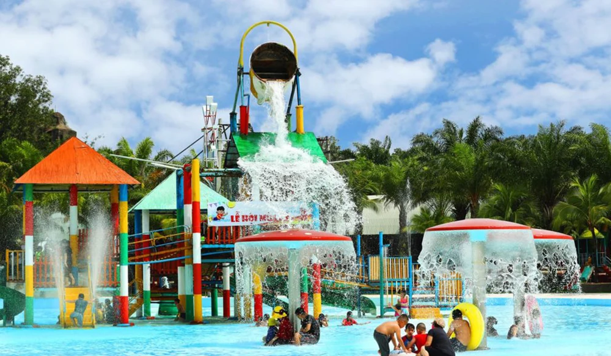
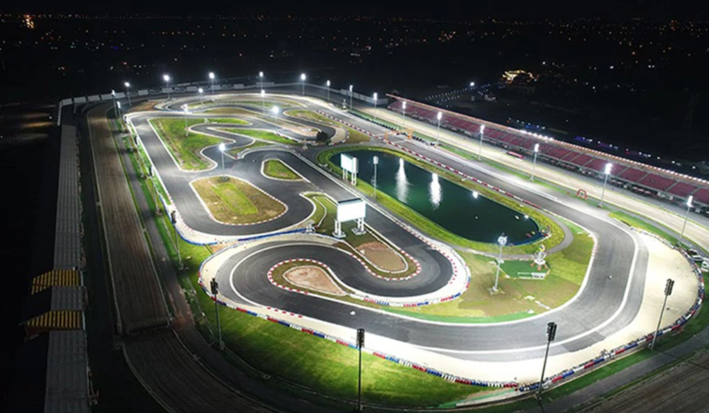
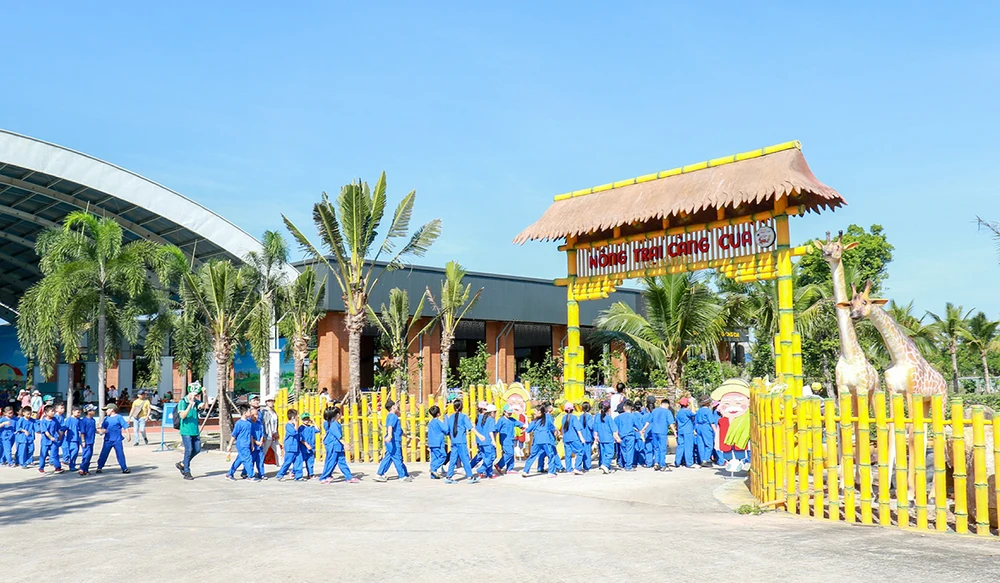
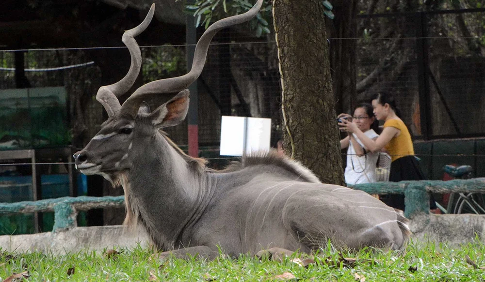
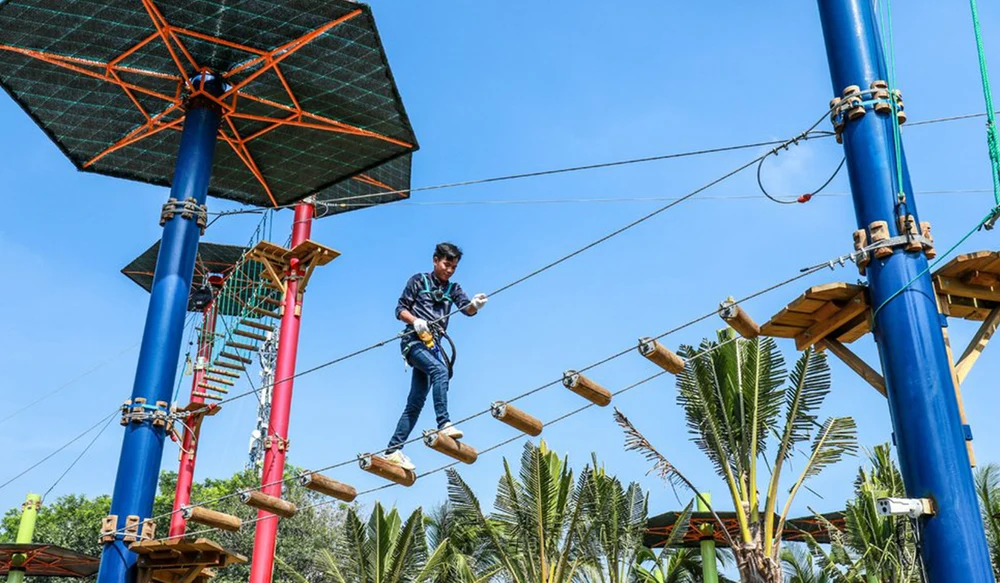

Khu Du Lịch Đại Nam
Khu du lịch Đại Nam là một trong những địa điểm vui chơi gần Sài Gòn cực hút khách từ nhiều năm nay, là địa điểm vui chơi giải trí lý tưởng vào những dịp cuối tuần cũng như những ngày lễ lớn
Giới Thiệu Về Khu Du Lịch Đại Nam
Khu du lịch Đại Nam, hay còn gọi là Đại Nam Văn Hiến, Đại Nam Du lịch thần tiên, là một khu du lịch tọa lạc tại phường Hiệp An, thành phố Thủ Dầu Một, tỉnh Bình Dương, Việt Nam. Đây là công trình du lịch quy mô vô cùng lớn được xây dựng từ năm 1999 với tổng kinh phí hơn 6.000 tỷ đồng và đã bắt đầu mở cửa đón du khách từ ngày 11 tháng 9 năm 2008 đến nay
Công Viên Đại Nam Có Gì Chơi?
1.Khu Vui Chơi Giải Trí Đại Nam
Đại Nam là nơi quy tụ những trò chơi cảm giác mạnh hàng đầu Việt Nam như tàu lượn siêu tốc, vòng xoay vũ trụ, vượt thác hay thám hiểm bầu trời. Trong đó nổi bật nhất là trò chơi tàu lượn siêu tốc được thiết kế dài tới 680m với những vòng xoay xoắn tròn 360 độ, có thể chở tới 24 hành khách và mỗi lượt chơi kéo dài 2,5 phút.
2. Đền Thờ Đại Nam
Ở Đại Nam có một đền thờ siêu rộng lớn tên là Kim Điện. Đây là đền thờ lớn nhất Việt Nam được xây dựng theo kiến trúc cổ thời nhà Lý với mô-típ vuông-tròn. Mái vòm hình tròn biểu trưng cho Trời có vẽ 108 con chim hạc thể hiện âm dương hòa hợp. Bốn bức vách của đền thờ tạo thể hiện hình vuông, được trạm trổ thành những bộ tranh lịch sử tiêu biểu, đánh dấu các mốc son lịch sử của Việt Nam.
3. Biển Nhân Tạo Đại Nam
Biển nhân tạo Đại Nam rộng tới 22 ha, nơi này được mệnh danh là một ốc đảo xanh mát giữa tỉnh Bình Dương. Đây là một trong những biển nhân tạo có quy mô lớn nhất cả nước và là một trong những nơi vui chơi chính của người dân thành phố. Khu vực biển Đại Nam có cả biển nước mặn và biển nước ngọt, với chiều sâu 2m và độ dập sóng tối đa là 1.6m cho bạn cảm giác chân thực như đang ở ngoài bãi biển tự nhiên thật sự.
4. Trường Đua Khu Du Lịch Đại Nam
Trường đua đại nam là công trình trọng điểm của khu du lịch này. Được khởi công xây dựng vào năm 2016 với tổng diện tích 60 ha, nơi đây thường xuyên tổ chức các hoạt động đua ngựa, đua chó, đua moto, go-kart, jet-ski và biểu diễn flyboard. Với cơ sở hạ tầng hiện đại hứa hẹn sẽ mang đến cho bạn những buổi biểu diễn hấp dẫn và đầy cạnh tranh.
5. Khu Du Lịch Sinh Thái Đại Nam
Khu du lịch sinh thái Đại Nam, hay còn gọi là nông trại "Càng Cua" Đại Nam là một không gian kết hợp giữa giải trí và trải nghiệm, mang tính giáo dục cao, chủ yếu giúp các du khách nhí khám phá, thư giãn và trải nghiệm gần gũi hơn với thiên nhiên.Nơi đây có nhiều loại hình trò chơi trải nghiệm như: Bắt cá bằng tay; Câu cá; Bơi thúng; Chèo xuồng; Đu xà đơn;Đi trên dây;Đu dây qua hồ nước; Thăm và thu hoạch vườn rau, vườn hoa, chuồng cừu; Làm gốm, tô tượng.
6. Vườn Bách Thú Khu Du Lịch Đại Nam
Vườn bách thú Đại Nam được khởi công xây dựng vào năm 2006, có diện tích 12,5 ha với khoảng 100 loài thú quý hiếm. Vườn thú có nhiều loài nằm trong sách đỏ có nguy cơ tuyệt chủng như hổ Đông Dương, tê giác trắng, các loài voọc, ngựa vằn, hà mã... Đây là cơ hội để du khách có thể quan sát các loài động vật hoang dã với cự ly gần.
7. Hành Trình Mạo Hiểm Trên Cao Ở Công Viên Đại Nam
Với những ai thích trò chơi siêu mạo hiểm và cảm giác mạnh, hãy thử một lần đến với hành trình mạo hiểm trên cao. Với sự hướng dẫn chuyên nghiệp từ HLV nước ngoài cùng thiết bị an toàn, các bạn hãy thỏa sức thử thách các trò chơi với 5 cấp độ: Khởi động - Trẻ em - Gia đình - Zipline - Mạo Hiểm
8. 18 Tầng Địa Ngục Ở Đại Nam
Công trình 18 tầng địa ngục Đại Nam được thiết kế theo quan niệm và phong cách Phật Giáo. Ngay cổng vào của điểm tham quan 18 tầng địa ngục là tấm biển cao lớn với dòng chữ "Luật nhân quả – cung ngũ long" và biểu tượng 5 con rồng ngậm ngọc